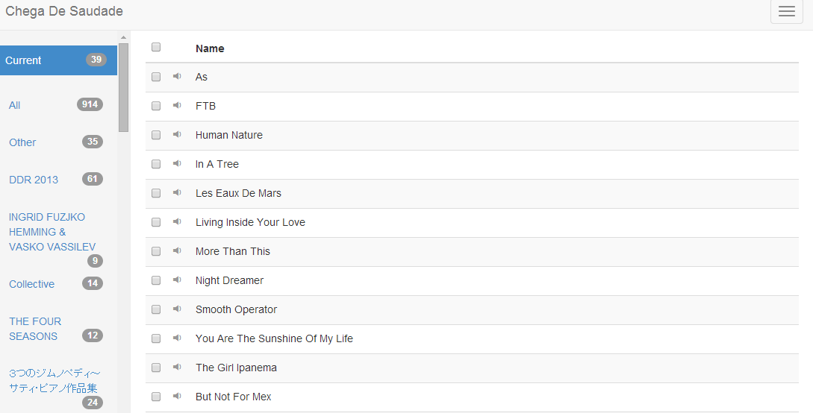

工房内サーバーで構築された楽曲再生及び楽曲管理のためのサーバーです。
工房を利用する人・工房回線にアクセス可能な者[要出典]であれば、誰でも楽曲の再生と楽曲の追加が出来ます。
なお、免責事項にも書いていますが、InternetExplorerでの閲覧は非推奨です。他ブラウザでAudioServerをご利用下さい。
目次
AudioServerへアクセスする方法
アクセスするためにはWebブラウザを開いて「192.168.1.35」と入力し、Enterを押します。もしくは、
入力画面画像をクリックで開きます。
（下画像は工房内接続環境時に限ります)
アクセスに成功するとcurrentプレイリストが表示されます。工房内に音楽が流れていれば、 左上には楽曲名が表示されていると思います。
メニューのかんたんなせつめいだよ

上メニュー
再生ボタン停止ボタン
前の楽曲を再生
次の楽曲を再生
Currentプレイリストをリピートで再生している状態表示
Currentプレイリストをランダムで再生している状態表示
リピート再生・ランダム再生がされていない状態表示
（真ん中はボリュームバー）
下メニュー
新しいプレイリストの作成プレイリストを削除
プレイリストに楽曲を追加
プレイリストから楽曲を削除
楽曲をアップロード
楽曲を再生する方法
楽曲を再生するにはCurrentプレイリストを選択します。 楽曲名の左にあるをクリックすれば再生出来ます。 再生中はで表示されます。
または、メニューを開き、 をクリックする事で
Currentプレイリスト内を再生していきます。
再生したい楽曲はCurrentプレイリストに入れる必要がある事に注意してください。
再生中は、右上メニューをクリックしてVolumeを適宜変えて下さい。
とのこと。Volumeバーはちょっと表示がおかしいというかバグっているので
音量の調整はバーではなく電子レンジ上のスピーカーのツマミを直接動かすのがオススメ
楽曲を追加する方法
楽曲を追加するにはメニューよりUploadを選択し、UploadUserを選択、または作成します。

楽曲をアップロードするのに成功すると、Allプレイリストの一番下に追加されてると思います。
適宜、自分でプレイリストを作成してください。
名前などは分かりやすい物がオススメです。
免責事項
- AudioServerはInternetExplorerでの利用を非推奨としています。他ブラウザをご利用下さい。
- AudioServerはモラルとマナーを守って利用しましょう。
- AudioServer利用によるブラウザの不具合は各自で解決させてください。
- 不具合や要望はGitHubのIssueに投稿してください。GitHub公式サイトはこちら